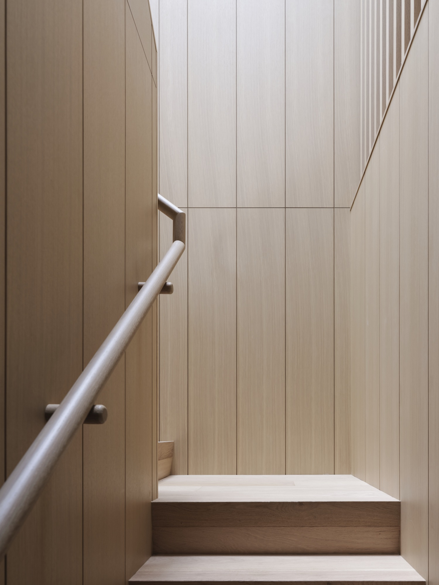

To create an emotional experience and unique environments within the home — through physical form and texture in wood. Quality and sophistication unsurpassed, continuously evolving.
Every project starts at the flitch. We slip-match, book-match, and sequence veneer in the order it came off the log — so the figure of the wood runs the room. Bent lamination over custom jigs, pin-and-tail dovetails, mortise-and-tenon — engineered into the work where the eye won't see it but the hand will.
Behind every project is a rigorous planning process: dimensional verification, sub-trade coordination, full mock-ups of the critical assemblies before we cut final stock. We continually research and develop better ways to surpass our clients' expectations. The pursuit is perfection — always the best-quality hardwoods, sheet goods, hardware, and finishes; always finished by hand under our own roof.
The standard is the same for every project: built to last generations, not seasons.

Veneer gets slip-matched and sequenced in the order it came off the log. Every door, every panel, every drawer face from the same flitch. You stop seeing cabinetry and start seeing the tree.
Pin-and-tail dovetails. Mortise-and-tenon. Bent lamination over custom jigs. The joinery is structural and invisible — built into the work where the eye won't see it, but the hand will.
We test, measure, and log everything — spring-back coefficients per species and humidity, finish failure modes, hardware tolerances. Every project teaches the shop something the next project benefits from.
Drafting, mock-up, production, finishing, install, punch-list — all under one roof, all by the same team. No sub-contracted finishing. No sub-contracted install. The hands that build it are the hands that finish it.
Always the best-quality hardwoods, sheet goods, hardware, and finishes. Conversion varnish, six coats, between-coat sanded. We don't compete on price; we compete on the bench.
"The curve doesn't always hold the shape. We test, we measure, we log the spring-back per species and humidity. Eventually you have it down to a science."Rick Wilson · President & Founder
Beyond the bench, the vision is about how a finished room makes a client feel. The fit of a drawer pulling out without resistance. The way a panel catches morning light. The hand on a hand-rail that's been turned and rubbed for hours, not run off a router. Our aim is to find new ways to provide our clients with a sense of pride and comfort within their home — and to keep finding them, project after project.
Selected residential estate work from across British Columbia — slip-matched walnut, diamond-bookmatched anigre, bent-laminated alder, tongue-and-groove rift oak.
View Our Work